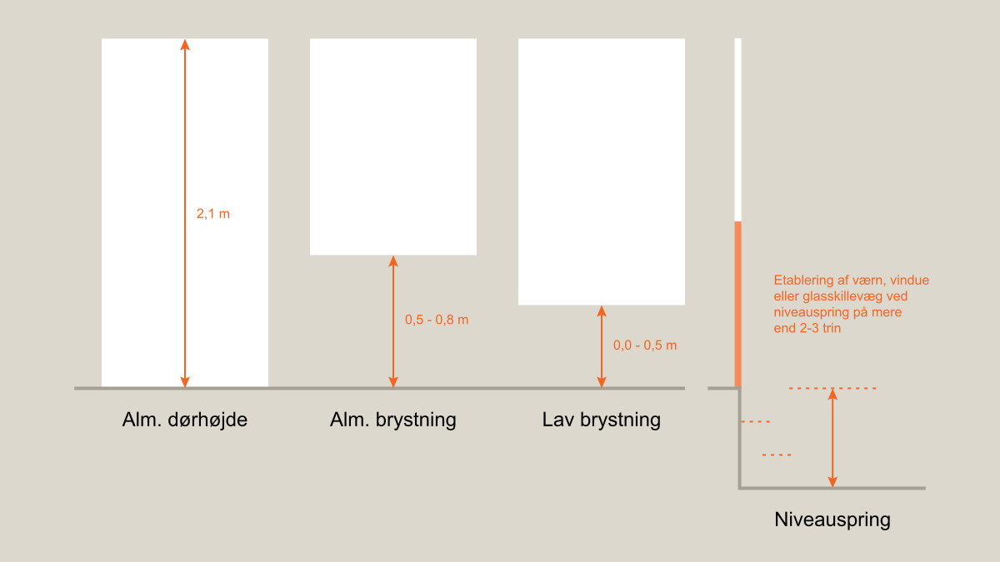
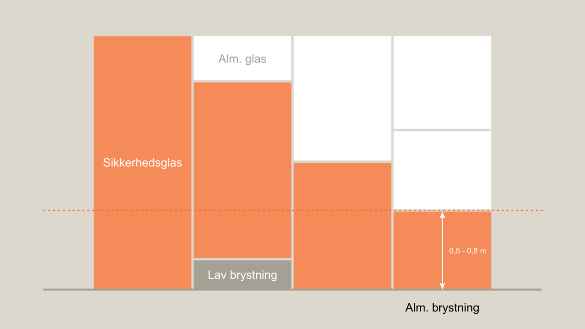
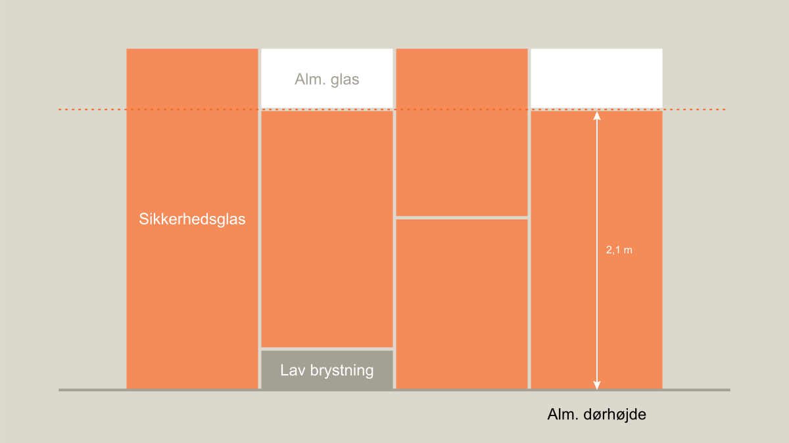
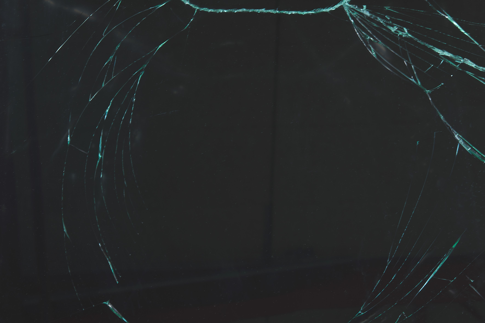
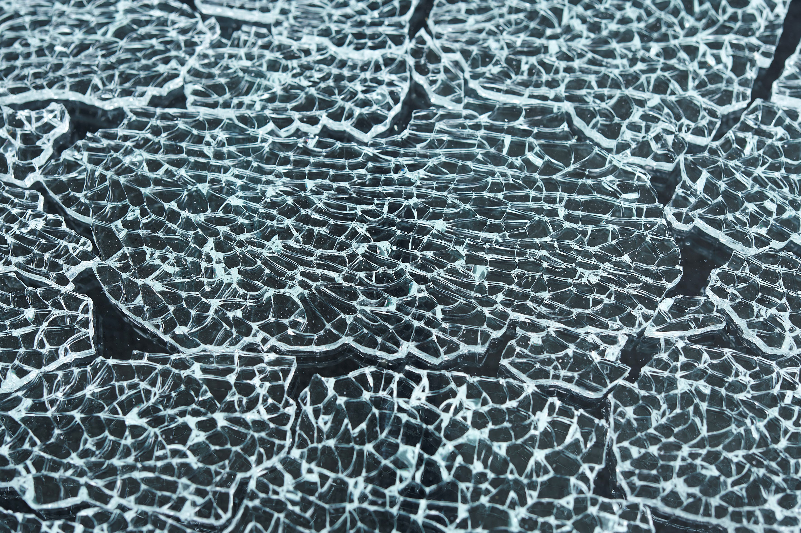

Swipe horisontalt for at se alle emner
Bygningens indretning (§ 196 - § 241)
- BR18 (Aktuelt)
- BR18 (1/7-31/12 2025)
- BR18 (1/1-30/6 2025)
- BR18 (1/7- 31/12 2024)
- BR18 (1/1- 30/06 2024)
- BR18 (1/1- 31/12 2023)
- BR18 (17/9 - 31/12 2022)
- BR18 (1/7 - 16/9 2022)
- BR18 (1/1 - 30/6 2022)
- BR18 (29/6 - 31/12 2021)
- BR18 (1/1-29/6 2021)
- BR18 (1/7-31/12 2020)
- BR18 (10/3-30/6 2020)
- BR18 (1/1-9/3 2020)
- BR18 (4/7-31/12 2019)
- BR18 (1/1-4/7 2019)
- BR18 (1/7-31/12 2018)
- BR18 (1/1-30/6 2018)
- BR15 (2015-2018)
- Tidligere BR (1961-2010)
Bygningsreglementets vejledning om glaspartier, glasflader og værn af glas i bygninger
Kolofon
Linket er kopieret
Bygningsreglementets vejledning om glaspartier, glasflader og værn af glas i bygninger
Vejledningen er udarbejdet af arkitekt MAA Bjarne Lund Johansen, NEXTTOOL for Trafik-, Bygge- og Boligstyrelsen.
Tekst og figurer: Trafik-, Bygge- og Boligstyrelsen og NEXTTOOL
Fotokredit: NEXTTOOL
Indledning
Linket er kopieret
Denne vejledning er en fortolkningsvejledning om personsikkerhed ved brug af glas i bygninger.Vejledningen kan anvendes som udgangspunkt for opfyldelse af de gældende funktionskrav i Bygningsreglementet, § 238 - 241:
§ 238 - I bygninger, hvor der er risiko for, at personer kan kollidere med større glaspartier i bygningen, skal der være tilstrækkelig sikkerhed for, at der ikke opstår personskade ved kollision med glasset. Personskade kan være skæreskader i forbindelse med brud på glasset eller skader på grund af kollision med glaspartiet, hvor der ikke sker en gennembrydning af glasset. Bestemmelsen omfatter eksempelvis glasdøre, glasvægge, glasfacader, værn og større vinduesflader.
Bestemmelsen anses som opfyldt ved etablering af værn, afskærmning eller opsætning af markering på glasset.
§ 239 - Hvis der efter sikring mod personskade (i medfør af § 238) fortsat er risiko for kollision og gennembrydning af glaspartier, skal glasset udføres, så risikoen for skæreskader begrænses.
§ 240 - Såfremt der i værn ved niveauspring i eller uden for bygningen benyttes glas, skal bestemmelserne i BR (§58 og 59) om værn ligeledes opfyldes.
§ 241 - Glas benyttet i vinduer og døre i boliger er ikke omfattet af § 238 og 239, med mindre der foreligger særlige forhold, hvor vinduet eller døren er placeret således, eller bygningen benyttes på en sådan måde, at der kan opstå risiko for personskader ved kollision med glasset.
Det er ikke obligatorisk at følge vejledningen, hvis man på anden måde kan dokumentere tilsvarende sikre løsninger, men følges vejledningen sikrer det, at bygningsreglementets bestemmelser er opfyldt.
| Anvendte begreber |
| Vejledningen indeholder en række begreber, der anvendes til at beskrive forhold, der kan have indflydelse på personsikkerheden i forbindelse med brug af bygningsglas. I Bygningsreglementet anvendes begrebet skal, fordi bestemmelserne om glas skal overholdes. Bestemmelserne er udtrykt som funktionskrav, der principielt kan opfyldes på flere måder, blot de er tilstrækkeligt dokumenterede. I vejledningen anvendes begrebet kan, fordi den indeholder et antal eksempler på, hvordan funktionskravene i Bygningsreglementet til personsikkerhed ved brug af bygningsglas kan opfyldes, samt hvilke overvejelser det er fornuftigt at gøre sig, hvor vejledning ikke indeholder konkrete eksempler. Vejledningen anvender begrebet sikkerhed i betydningen personsikkerhed. Vejledningen behandler ikke forhold, der vedrører sikring af bygninger og bygningsdele, f.eks. indbrudssikring. |
Almindelige ruder med 2- eller 3-lags glas er det almindeligst anvendte i nybyggeri og ved ombygning. Det er bygningsglas, der i sig selv har en stor modstandsevne og kan holde til de normalt forekomne påvirkninger, uden at der sker brud på glasset, blandt andet fordi det er dimensioneret til formålet.
I en lang række tilfælde bruges glas i byggeriet dog på en sådan måde, at det vil være nødvendigt for både bygningsejere og rådgivere at overveje særlige løsninger for at opnå det sikkerhedsniveau, der er nødvendigt for at opfylde Bygningsreglementets bestemmelser.
Glasrelaterede personskader sker både i forbindelse med almindelige familieaktiviteter i boligen, bl.a. ved løb og leg, og i forbindelse med mere voldsom adfærd, hvor personer kolliderer med glaspartier i døre, vinduer og skillevægge.
Vejledningen gør opmærksom på en række risici ved brug af bygningsglas i forbindelse med almindelig adfærd i og omkring bygninger, og beskriver en række muligheder for bygningsmæssige løsninger, der kan medvirke til at reducere risikoen for kollision og skæreskader.
Hvilke foranstaltninger, der skal anvendes i hvert enkelt tilfælde, må vurderes i forhold til den aktuelle risiko i forbindelse med bygningens anvendelse, udformning og beliggenhed.
Anvendelse
Linket er kopieret
Vejledningen henvender sig først og fremmest til bygningsejere, da personsikkerhed i forbindelse med bygningsglas, på linje med bygningens lovlighed i øvrigt, er et ansvar, som påhviler den enkelte ejer.
Da bygningsejere ofte overlader ansvaret for nybyggeri, om- og tilbygninger samt renovering og udskiftning af bygningsdele til byggeriets rådgivere, leverandører og udførende, er målgruppen dog i lige så høj grad dem.
Beslutninger om valg og anvendelse af bygningsglas bør altid indgå som en del af projekt- og udbudsmaterialet eller på anden måde i aftalegrundlaget for en byggesag, så der er sikkerhed for, at Bygningsreglementets funktionskrav til personsikkerhed bliver opfyldt.
Vejledningen gælder for nybyggeri samt væsentlige om- og tilbygninger med undtagelse af jordbrugserhvervets avls- og driftsbygninger samt væksthuse. Den omfatter alt bygningsglas, der varigt indbygges i et bygningsværk, herunder også glas der indgår i en indretningsmæssig sammenhæng, hvor glasset udgør en permanent del af døre, vægge og skærme, for eksempel i baderum.
Vejledningen vil også kunne anvendes i situationer, der ikke nødvendigvis er omfattet af Bygningsreglementet, for eksempel udskiftning af bygningsglas, eller hvor en bygherre ønsker en nyvurdering af personsikkerheden i eksisterende bygninger.
Forudsætninger
Linket er kopieret
Det er alene forhold i forbindelse med personsikkerhed ved brug af glas i bygninger, der behandles. Derfor er det forudsat, at det anvendte bygningsglas er dimensioneret i henhold til gældende forskrifter, normer og standarder.
Det er en forudsætning, at vinduer og døre i ydervægge, glasydervægge, glastage og ovenlysvinduer er udført med 2- eller 3-lags termoruder, med mindre der specifikt er refereret til enkeltglas. Indvendige døre og skillevægge kan enten være udført med enkeltglas eller som en 2-lags løsning. I vejledningen er der forudsat ens krav til glasset.
Det er tillige en forudsætning, at vinduer, døre, glasydervægge, skillevægge og ovenlysvinduer kan udføres med almindeligt glas. Hvor det anføres, at der skal eller kan anvendes lamineret sikkerhedsglas for at hindre nedfald af glas eller for at tilbageholde personer, er det forudsat, at glasset er forsvarligt fastholdt.
Vurdering af risiko for personskader
Linket er kopieret
Bygningsreglementet forudsætter, at bygningsglas vælges og anvendes, så der opnås sikkerhedsmæssigt tilfredsstillende forhold i relation til personskade.
Vejledning til en konkret vurdering af risikoen for personskader ved kollision med bygningsglas fremgår af nærværende afsnit. Vejledning om anvendelse af bygningsglas i en række bygningsdele findes i afsnittet Brug af bygningsglas.
I nybyggeri og ved væsentlig om- eller tilbygning er det nødvendigt at foretage en vurdering af personrisikoen ved brug af bygningsglas for at fastlægge, hvilke foranstaltninger der skal tages i brug for at opnå tilstrækkelig personsikkerhed i forhold til funktionskravene i Bygningsreglementet, se tabel 1.
| Skadesårsager | Forebyggelse af personskader |
| Læsioner kan forekomme, hvor en person kolliderer med en glasflade, uden at glasset går i stykker. | Læsioner kan forebygges, ved enten at afskærme glaspartier så kollisioner forhindres, eller ved at markere glasset så det ikke bliver overset. |
| Skæreskader kan forekomme, hvor en person kolliderer med en glasflade og skærer sig på brudstykker, hvis glasset går i stykker. | Skæreskader kan begrænses, ved enten at afskærme glaspartier så kollisioner forhindres, eller ved at markere glasset så det ikke bliver overset og bruge sikkerhedsglas. |
| Nedstyrtning af personer kan forekomme, hvis glasset ikke har tilstrækkelig styrke til at optage last fra personer, der læner sig op ad glasset, kolliderer med glasset eller står på glasset. | Nedstyrtning, der skyldes brud i f.eks. værn, glaspartier eller gulve af glas, kan begrænses ved at dimensionere for de forekommende laster og samtidig sikre, at glasset kan tilbageholde personer efter eventuelt brud, foreksempel ved brug af lamineret sikkerhedsglas. |
| Nedfald af glas kan forekomme ved brud i glas, foreksempel i tage, lofter og ovenlysvinduer, som falder ned og derved skader personer, der færdes eller opholder sig under glasset. | Nedfald af glas kan begrænses ved at dimensionere for de forekommende laster og bruge lamineret sikkerhedsglas, der fastholdes efter eventuelt brud. |
Risikoen for personskader kan reduceres ved, at der udvises den nødvendige opmærksomhed omkring de enkelte risikofaktorer, der kan have betydning ved udformning af bygningen i forhold til bygningens funktion og brug, og ved anvendelse af egnede glastyper.
Ved planlægning og projektering med bygningsglas, skal det indgå i vurdering af risikoen for personskader:
• Om bygningen overvejende anvendes af personer, der kender bygningens indretning, for eksempel beboere og personale, og hvor risikoen normalt anses for at være lav, eller
• Om bygningen er tilgængelig for offentligheden og dermed anvendes af personer uden nærmere kendskab til bygningen og dens udformning. Det gælder ikke mindst, hvor mange personer forsamles i bygningen, og hvor der vil være risiko for, at personer af egen kraft eller ved at blive presset ind mod glasset kan gennembryde det.
Det bør vurderes, hvor store dele af et glasparti, det er nødvendigt at udføre med sikkerhedsglas set i forhold til den konkrete risiko. I vurderingen bør det indgå, om glasfladen skal udføres med sikkerhedsglas i almindelig dørhøjde, eller om der alene er behov for at anvende sikkerhedsglas i mindre dele, for eksempel lavtsiddende glas under almindelig brystningshøjde. Det bør også indgå i vurderingen, om glasfladen er opdelt, eksempelvis af sprosser, der kan virke som markering af glasfladen, eller udført som en større ubrudt flade, der lettere vil kunne blive overset.
Hvor glas anvendes som værn eller indgår i værn, for eksempel på trapper, ramper og hævede opholdsarealer, samt hvor glaspartier adskiller en niveauforskel i gulvflader eller mellem gulv og terræn, skal det sikres, at personer ved kollision med glasset ikke kan bryde gennem det og styrter ned.
Glassets placering - definitioner
Linket er kopieret
Glassets placering og størrelse har betydning i forhold til risikoen for personskader. De definitioner, som anvendes fremgår af tabel 2 og figur 1. De er vejledende, da den reelle risiko for personskader altid skal vurderes i hver enkelt situation ud fra bygningens udformning og anvendelse.
Vejledende definitioner ud fra glassets anvendelse og placering
| Glassets anvendelse | Glaspartiers placering |
| Almindelig dørhøjde | Hvor overkant glas højst svarer til almindelig dørhøjde, ca. 2,1 m |
| Almindelig brystningshøjde* | Hvor underkant glas er mindst 0,5 m over gulv |
| Lav brystning | Hvor underkant glas er mindre end 0,5 m over gulv |
| Almindelig trinhøjde (stigning) | Ca. 0,18 m |
| * Brystninger ved vinduer bør ikke være under 0,8 m, hvor vinduer kan åbnes, og der er risiko for at falde ud gennem åbningen. | |
Vejledende definitioner af glaspartiers placering

Niveauspring og højdeforskelle
Linket er kopieret
Niveauspring, f.eks. i gulvflader eller mellem gulv og terræn, samt højdeforskelle ved hævede opholdsarealer, f.eks. terrasser og altaner, kan udgøre en risiko for fald eller nedstyrtning af personer.
Niveauspring i gulvflader større end almindelig trinhøjde vil øge risikoen for at personer kan falde. Er højdeforskelle ved hævede opholdsarealer og niveauspring i gulve eller mellem gulv og terræn større, end hvad der svarer til 2 - 3 trin med almindelig trinhøjde, vil der være risiko for fald eller nedstyrtning af personer.
Forekommer der niveauspring eller højdeforskelle, hvor personer færdes eller opholder sig, skal der etableres sikring mod fald eller nedstyrtning, som anført i vejledningen.
Se også Figur 1 - Vejledende definitioner af glaspartiers placering, under afsnit 2.1.0.
Sikring mod skæreskader
Linket er kopieret
Personkollision med glas kan eksempelvis forekomme, hvor en person overser glasset i den tro, at det er en åbning.
Risikoen for kollision med glaspartier og dermed for skæreskader skal reduceres ved at afskærme glasset, markere glaspartier eller anvende sikkerhedsglas.
| Forebyggelse af skæreskader Risikoen for kollision med glaspartier og dermed for skæreskader skal blandt andet forebygges ved hjælp af afskærmning, markering eller ved brug af sikkerhedsglas. |
| Afskærmning af glaspartier Hvor det vurderes, at der vil være risiko for kollision med bygningsglas og for skæreskader ved brud på glasset, kan skader forebygges ved at udforme bygningen, så udsatte glaspartier er afskærmet, og ved at indrette bygningen så den forebygger uhensigtsmæssig personadfærd. Afskærmning kan være rækværker, brystninger, radiatorer, plantekummer, vandbassiner, beplantninger med videre af permanent karakter og egnet størrelse. |
| Markering af glaspartier Hvor der kan være risiko for at glaspartier vil blive overset, kan glasfladerne markeres varigt og synligt under alle normale belysningsforhold for at undgå, at personer kolliderer med glasset og eventuelt pådrager sig skæreskader. Glaspartier i døre og glaspartier ved siden af døre, der kan forveksles med åbninger, er særligt udsat for at blive overset og kan derfor med fordel markeres. Er vinduer og døre delt af vandrette sprosser, vil risikoen for at glaspartier bliver overset normalt være reduceret, fordi sprosser ofte kan virker som markering. Markeringen kan foretages med kontrastfarver på vinduer, glasdøre og andre tilsvarende glaspartier. Svagtseende, kørestolsbrugere med videre kan have brug for ekstra markeringer. |
| Anvendelse af sikkerhedsglas Hvor vinduer er udført med almindelig brystning, vil der være lille risiko for at glasset bliver overset, og der kan normalt anvendes almindeligt glas. I boliger kan der anvendes almindeligt glas i vinduer og døre, med mindre de er placeret sådan eller bygningen benyttes på en sådan måde, at der kan opstå risiko for personskader ved kollision med glasset. Går glaspartier helt til gulv eller er udført med en lav brystning, kan der være risiko for at glasset bliver overset, blandt andet i forbindelse med trængsel eller ved leg. Risikoen øges, hvor personer færdes og ikke kender bygningen, samt hvor bygningen overvejende anvendes af børn og ældre. Derudover øges risikoen med størrelsen af glasarealet, og af hvor glasset er placeret, eksempelvis for enden af en ganglinje, i modlys og lignende. Risikoen for kollision og skæreskader kan begrænses ved at markere glasset og anvende sikkerhedsglas. Glaspartier i døre samt glas umiddelbart ved siden af døre kan være særlig udsatte for kollision, især helglasvægge og -døre. De kan være markeret og udført af sikkerhedsglas. Hvor glaspartier adskiller niveauspring, for eksempel i gulve eller mellem gulv og terræn, og dermed har en værnfunktion, kan der anvendes fastholdt, lamineret sikkerhedsglas, for at hindre personer i at falde gennem glasset og få skæreskader. Hvilken type sikkerhedsglas der skal anvendes, afhænger blandt andet af glassets placering, og om det alene skal forhindre skæreskader, eller om det samtidigt skal tilbageholde personer, eksempelvis ved niveauspring mellem gulv og terræn. |
Boliger
Linket er kopieret
I boliger er risikoen for at glas i vinduer, døre og skillevægge bliver overset begrænset, fordi beboerne kender forholdene. Derfor kan der anvendes almindeligt glas i døre og vinduer, med mindre de er placeret sådan eller bygningen benyttes på en måde, at der vil være risiko for personskader ved kollision med glasset, for eksempel hvor vinduer adskiller niveauspring, hvor vinduer eller glaspartier er placeret nedenfor et trappeløb, hvor der anvendes fuldglasdøre og hvor glas i beboelsesejendomme med videre anvendes i indgangspartier og lignende.
Hvor vinduer adskiller et niveauspring mellem gulv og terræn, og hvor det vurderes, at der vil være risiko for at personer kan kollidere og falde gennem glasset, eksempelvis vinduer helt til gulv eller med lav brystning, kan glasset enten være afskærmet eller udført af lamineret sikkerhedsglas i det inderste lag glas.
Hvor der vil være risiko for at glaspartier bliver overset og personer kan kolliderer med glasset, i eksempelvis indgangspartier, fordelingsgange og mødesteder i beboelsesejendomme, ungdomsboliger og lignende, kan glasset enten være afskærmet eller udført af sikkerhedsglas. Det gælder for eksempel glas i døre, i sidepartier der kan forveksles med åbninger, skillevægge samt i partier, hvor underkant af glasset er lavere end almindelig brystningshøjde.
Kontorer
Linket er kopieret
På kontorer, der primært anvendes af personalet, vil der normalt være beskeden risiko for at glaspartier bliver overset. Risikoen for personkollision og dermed for skæreskader vil derfor være begrænset. Indvendige glaspartier kan være afskærmet eller markeret i nødvendigt omfang. Risikoen for skæreskader ved kollision med glas i døre og skillevægge af glas i gangarealer og lignende kan forebygges ved at afskærme eller markere og anvende sikkerhedsglas.
På kontorer, hvor der færdes mange andre personer end personalet, for eksempel på kontorer med offentlig adgang, er der større risiko for at glaspartier bliver overset, fordi personerne ikke kender bygningen. Glas i døre, skillevægge af glas samt glaspartier i gangarealer, fællesarealer med videre kan være afskærmet eller markeret og udført af sikkerhedsglas. For vinduer med almindelig brystning vil risikoen for kollision være beskeden, hvorfor der som udgangspunkt kan anvendes almindeligt glas.
Skoler, daginstitutioner mv.
Linket er kopieret
I skoler, fritidshjem, ungdomsklubber og lignende vil der være øget risiko for, at der kan forekomme personkollision med glaspartier, eksempelvis ved trængsel og leg.
Da kollisioner tillige vil kunne ske med høj fart, vil der være en øget risiko for at glaspartier i gang- og fællesarealer, glas i vinduer og døre, samt glaspartier ved siden af døre der vil kunne forveksles med åbninger, kan medføre skæreskader, med mindre glasset er afskærmet eller markeret og udført af sikkerhedsglas.
I klasselokaler, møderum mv. kan vinduer med almindelig brystning udføres med almindeligt glas, da risikoen for kollision vil være beskeden.
I børnehaver, specialskoler med videre, hvor børnene ikke vil kunne forventes at være opmærksomme på risikoen ved kollision med bygningsglas, kan lavtsiddende glaspartier under almindelig brystningshøjde og glaspartier i almindelig dørhøjde være afskærmet eller markeret og udført af sikkerhedsglas.
I rum, hvor der kun opholder sig personale, vil vejledningen for Kontorer kunne anvendes.
I gymnastiksale, aktivitetsrum og lignende vil vejledningen for Gymnastiksale, sportshaller mv. kunne anvendes.
Restauranter, biografer, udstillinger mv.
Linket er kopieret
I bygninger med publikumsarealer, hvor personer færdes og forsamles ved borde eller på faste siddepladser som caféer, restauranter, kirker, teatre, biografer, konferencelokaler, auditorier, ventesale og lignende, vil der være risiko for at glaspartier bliver overset, fordi de besøgende ikke kender bygningen. Glas i døre og glaspartier i dørhøjde kan derfor enten være afskærmet eller markeret og udført af sikkerhedsglas.
For vinduer med almindelig brystning vil risikoen for kollision være beskeden, hvorfor der normalt kan anvendes almindeligt glas.
I områder som fortrinsvist anvendes af personale, vil vejledningen for Kontorer kunne anvendes.
Gymnastiksale, sportshaller mv.
Linket er kopieret
I gymnastiksale, aktivitetsrum, sportshaller, svømmehaller, dansesale, fitnesslokaler og lignende, hvor der udfoldes fysisk aktivitet, vil der være øget risiko for, at der kan forekomme personkollision med glaspartier og dermed for skæreskader.
Da kollisioner tillige vil kunne ske ved høj fart, vil der være en øget risiko for, at glaspartier op til almindelig dørhøjde kan medføre skæreskader, med mindre glasset er markeret og udført af sikkerhedsglas.
Hvor glaspartier er placeret over almindelig dørhøjde, vil en vurdering af den aktuelle risiko for kollision, beskadigelse og skæreskader oftest være nødvendig, eksempelvis i forbindelse med boldspil, for at fastlægge behovet for personbeskyttelse mod nedfald og skæreskader.
I områder som fortrinsvist anvendes af personale, vil vejledningen for Kontorer kunne anvendes.
Musikhuse, forsamlingslokaler mv.
Linket er kopieret
I bygninger, hvor mange mennesker forsamles til offentlige begivenheder, og hvor der kan være trængsel og aktivitet, for eksempel foyerer, forsamlingslokaler, koncertsale og lign., vil der være øget risiko for, at personer kan kollidere med glaspartier, bliver presset mod glasflader og påfører sig skæreskader, med mindre alle glaspartier op til almindelig dørhøjde enten er afskærmet eller markeret og udført af sikkerhedsglas.
I motionslokaler, dansehaller med videre, hvor der er megen fysisk aktivitet, vil vejledningen for Gymnastiksale, sportshaller med videre kunne anvendes.
I områder som fortrinsvist anvendes af personale, vil vejledningen for Kontorer kunne anvendes.
Butikker
Linket er kopieret
I butikker vil der være risiko for, at personer kolliderer med glaspartier i butiksdøre, og påfører sig skæreskader, hvis glaspartierne bliver overset. Glasset kan enten være afskærmet eller markeret og udført af sikkerhedsglas. Om der er behov for at anvende sikkerhedsglas i sidepartier til døre samt øvrige glaspartier, eller om en afskærmning eller markering af glasset er tilstrækkelig, må vurderes i hvert enkelt tilfælde.
Glasskillevægge, der eventuelt kan åbnes, for eksempel flytbare og mobile glasvægge i indkøbscentre, vil ofte kunne blive overset. Risikoen for trængsel er også større end ved glas i facader. Derfor kan indvendige glaspartier udføres af sikkerhedsglas, ligesom der ofte vil være behov for en tydelig markering af glasset.
I områder som fortrinsvist anvendes af personale, vil vejledningen for Kontorer kunne anvendes.
Sikring mod at personer kan styrte ned
Linket er kopieret
Ved niveauspring i gulve eller mellem gulv og terræn vil der være behov for at etablere en sikring mod nedstyrtning af personer.
Hvor sikringen består af glas, skal glasset kunne optage belastning fra personer, der læner sig op ad eller kolliderer med glasfladen. Det gælder blandt andet glas i værn og glasvægge med værnfunktion, eksempelvis på trapper, ramper, balkoner, hævede opholdsarealer og afgrænsning af indskudte etagedæk, samt ved niveauspring i gulve eller mellem gulv og terræn.
Risikoen for brud og evnen til at tilbageholde personer efter brud afhænger blandt andet af glassets placering, brug af sikkerhedsglas, og ikke mindst af glasfladens størrelse, fastholdelse og understøtningsforhold.
Sikkerhedsglas skal kunne optage belastningen fra personer før under og efter brud og må derfor ikke kunne falde ud af rammer, holdere og indfatninger. Udformning af glasfalse, fastgørelse af glaslister, klembeslag og bolte samt klæbning mellem glas og ramme skal være udført, så glasset ikke kan glide ud efter brud.
I forbindelse med punktfastholdelse af sikkerhedsglas vil det være nødvendigt at vælge en egnet type lamineret glas med tilstrækkelig styrke og stivhed efter brud.
Værn
Linket er kopieret
Gange, trapper og ramper i fælles adgangsveje samt altaner, franske altandøre, altangange, luftsluser, tagterrasser, udvendige trapper samt andre hævede opholdsarealer skal ifølge Bygningsreglementet sikres med værn for at hindre nedstyrtning af personer.
Glas, der fungerer som værn, skal være dimensioneret til formålet efter gældende forskrifter, udført af egnet, lamineret sikkerhedsglas og fastholdt så effektivt, at det efter brud kan tilbageholde personer.
Termoruder i vinduer, der har værnfunktion, og dermed skal sikre mod nedstyrtning af personer, kan udføres af lamineret sikkerhedsglas i det inderste lag.
| Niveauspring |
| Niveauspring i gulve eller mellem gulv og terræn samt hævede opholdsarealer kan udgøre en risiko for fald eller nedstyrtning af personer. Hvor niveauspring afgrænses af værn, og hvor værn er udført af glas eller delvis af glas, kan der anvendes lamineret sikkerhedsglas for at hindre nedstyrtning og skæreskader ved personkollision og brud i glasset. Hvor niveauspring er afgrænset af glasfacader, vinduespartier eller vægge af glas, og hvor der kan være en risiko for personskade ved fald gennem glasset, kan glaspartierne sikres, for eksempel ved afskærmning eller ved markering og anvendelse af lamineret sikkerhedsglas. |
Gulve og trapper
Linket er kopieret
Glasset skal kunne tilbageholde personer i tilfælde af brud, og kan derfor være udført af lamineret sikkerhedsglas, der er opbygget og dimensioneret efter gældende forskrifter.
Sikring mod nedfald af glas
Linket er kopieret
Glas i tage, lofter og skrå flader kan udgøre en risiko for personer, der færdes nedenunder, hvis glasset kan falde ned. Risikoen for nedfald af glas kan begrænses ved at glasset dimensioneres efter forekommende laster og gældende forskrifter, samt ved at anvende hensigtsmæssige glastyper og fastholdelser.
For glasfacader og fuldglasvægge i bygninger afhænger sikkerheden mod nedfald primært af dimensioneringen og den valgte glastype.
Vinduer og vinduespartier kan normalt udføres med almindeligt glas uden risiko for nedfald, når montering og fastholdelse dimensioneres efter de forekommende laster.
Brug af bygningsglas
Linket er kopieret
Vejledningen omfatter alt byggeri med undtagelse af jordbrugserhvervets avls- og driftsbygninger og væksthuse, samt vinduer og døre i boliger med mindre der foreligger særlige forhold.
| Boliger |
| Boliger omfatter blandt andet etageboliger, ungdomsboliger, plejehjem samt enfamiliehuse, rækkehuse, kædehuse, dobbelthuse og sommerhuse. Forsamlingsrum og lignende i boligbebyggelser er omfattet af de generelle regler. |
For en række bygningsdele angives det, hvor det normalt vurderes, at anvendelsen af almindeligt glas indebærer en risiko for personskader, hvor der for boliger kan foreligge særlige forhold, og hvor det kan være nødvendigt at træffe nødvendige foranstaltninger.
Eksempler på risici i forskellige bygningstyper ved brug af bygningsglas fremgår af afsnittet Vurdering af risiko for personskader.
Vinduer
Linket er kopieret
Vinduer og vinduespartier med almindelig brystning kan normalt udføres med almindeligt glas, med mindre der foreligger særlige forhold, for eksempel i børneinstitutioner, hvor børn kan komme i direkte kontakt med glasset, samt i gymnastik- og sportshaller med fysisk aktivitet og lignende.
I bygninger hvor mennesker forsamles, i publikumsarealer og hvor der er offentlig adgang, kan vinduer til gulv eller med lav brystning enten være afskærmet eller markeret og udført med sikkerhedsglas.
I skoler, børneinstitutioner, sportshaller og lignende, kan lavtsiddende vinduer under almindelig brystningshøjde samt vinduer til gulv eller med lav brystning enten være afskærmet eller markeret og udført af sikkerhedsglas.
I boliger kan vinduer og vinduespartier helt til gulv eller med lav brystning udføres af almindeligt glas med mindre, der foreligger særlige forhold, eksempelvis i indgangspartier, fordelingsgange, mødesteder og for enden af gangarealer i beboelsesejendomme, ungdomsboliger og lignende. Her kan glasset enten være afskærmet eller markeret og udført af sikkerhedsglas. Tilsvarende vil gælde for kontorer med videre, der primært anvendes af personalet.
Hvor glas adskiller niveauspring i gulve eller mellem gulv og terræn kan glasset enten være afskærmet eller udført af sikkerhedsglas.
Hvor for eksempel vinduer eller glaspartier er placeret nedenfor et trappeløb og lignende, og hvor der vil være risiko for at personer kan kollidere med glasset ved fald, kan glasset enten være afskærmet eller udført af sikkerhedsglas.
| Vinduer med enkeltglas |
| Vinduer og vinduespartier med enkeltglas, f.eks. vinduer med koblede rammer, ældre sprossede vinduer og lignende, vil normalt være udført med almindeligt glas. Hvor det vurderes, at der vil være risiko for skæreskader ved kollision med glasset, kan det indgå i overvejelserne i stedet at anvende sikkerhedsglas. |
Yderdøre
Linket er kopieret
Yderdøre og dørpartier helt eller delvist af glas, samt glas i sidepartier, der kan forveksles med åbninger, for eksempel butiksdøre, indgangspartier i kontorer og bygninger med offentlig adgang, kan enten være afskærmet eller udført med sikkerhedsglas.
I boliger kan yderdøre og sidepartier, helt eller delvist af glas, normalt udføres af almindeligt glas med mindre, der foreligger særlige forhold, eksempelvis i indgangspartier, fordelingsgange i beboelsesejendomme, ungdomsboliger og lignende, hvor glasset kan være afskærmet eller udført af sikkerhedsglas.
Yderdøre og dørspartier helt i glas, samt glas i sidepartier der kan forveksles med åbninger, kan markeres for at mindske risikoen for personkollision. Se afsnit 2.3.0. Markering af glaspartier.
Ydervægge
Linket er kopieret
Glasydervægge mod ubefærdede arealer, for eksempel havearealer, gårdhaver med videre, eller hvor facader er afskærmet, kan udføres med almindeligt glas.
Hvor glasydervægge vender mod overvejende gående trafik langs ydervæggen, eksempelvis fortove og stier, kan det indgå i vurdering af personsikkerheden, om glasset skal være afskærmet eller om det yderste lag glas skal være sikkerhedsglas. Det gælder eksempelvis hvor underkanten af glasset er nærmere terræn, end det der svarer til almindelig brystningshøjde, se figur 2.
Glasydervægge mod befærdede udendørsarealer med færdsel i retning mod ydervæggen, som ved offentlige pladser, gågader, parkeringspladser og lignende, hvor underkanten af glasset er nærmere terræn, end det der svarer til almindelig dørhøjde, kan glasset enten være afskærmet eller udført af sikkerhedsglas i det yderste lag glas, se figur 3.
Glasydervægge, der er skråt udadhældende, samt vinduer og glaspartier i lignende konstruktioner, kan udføres med lamineret sikkerhedsglas i nederste lag glas. Behovet for yderligere foranstaltninger bør vurderes i hvert enkelt tilfælde for at opnå tilstrækkelig personsikkerhed.
Hvor glas og glaspartier i ydervægge adskiller et niveauspring mellem gulv og terræn, kan glasset enten være afskærmet eller udført af lamineret sikkerhedsglas i det inderste lag glas. Tilsvarende gælder for boliger, hvor glas i ydervægge adskiller et niveauspring mellem gulv og terræn.Hvor mange mennesker forsamles, eksempelvis i foyerer, festlokaler, svømmehaller, gymnastiksale, sportshaller og lignende, og hvor der er risiko for at personer kan blive presset mod eller kollidere med glasydervægge, kan glasflader med underkant nærmere gulv end hvad der svarer til almindelig dørhøjde, enten være afskærmet eller udført af sikkerhedsglas i det inderste lag glas.
Glasdøre i ydervægge samt glaspartier, der kan forveksles med åbninger, kan markeres for at mindske risikoen for personkollision. Se afsnit 2.3.0. Markering af glaspartier.
Vinduer og glasydervægge mod overvejende gående trafik langs ydervæggen, f.eks. fortove og stier. I rum med mange mennesker, kan der anvendes sikkerhedsglas i inderste lag glas

Vinduer og glasydervægge mod befærdede udendørsarealer med færdsel i retning mod ydervæggen. I rum med mange mennesker, kan der anvendes sikkerhedsglas i inderste lag glas.

Skillevægge og indvendige døre
Linket er kopieret
I bygninger, der overvejende anvendes af personer, der kender bygningens indretning som kontorer og lignende, kan glaspartier i skillevægge med almindelig brystning, glas i skillevægge der er markeret eller som er afskærmet, udføres af almindelig glas.
Hvor det vurderes, at der vil være risiko for at personer kolliderer med uafskærmede skillevægge og indvendige døre udført med glaspartier, kan der anvendes sikkerhedsglas. Fuldglasvægge og -døre kan udføres af sikkerhedsglas.
I bygninger, der er tilgængelige for offentligheden, i bygninger hvor mange mennesker forsamles og i bygninger der fortrinsvis anvendes af børn og ældre, og hvor der er risiko for personkollision med skillevægge og indvendige døre udført helt eller delvist i glas, kan glasset enten være afskærmet eller udført af sikkerhedsglas. Det gælder især, hvor skillevægge og indvendige døre er placeret på tværs af eller for enden af gangarealer og ganglinjer, og hvor underkanten af glaspartier er nærmere gulv, end hvad der svarer til almindelig dørhøjde. Det kan eksempelvis være glasdøre, lavtsiddende glas og fuldglasvægge i indendørs butiksarealer, skoler, børneinstitutioner, dagcentre, biografer, teatre og lign., samt i foyerer, ankomstarealer, gangarealer og møderum.
I svømmehaller, sportshaller, gymnastiksale, industrikøkkener og lignende, hvor der normalt er høj risiko for kollision med glaspartier i skillevægge og indvendige døre på grund af våde og glatte gulvflader, på grund af høj aktivitet eller risiko for stødpåvirkning, kan glaspartierne enten være afskærmet eller udført af sikkerhedsglas. Hvor der er risiko for at glas i skillevægge over dørhøjde vil kunne falde ned forårsaget af boldspil med videre, kan glaspartierne udføres af sikkerhedsglas.
I boliger kan døre og skillevægge, helt eller delvist af glas, udføres af almindeligt glas med mindre, der foreligger særlige forhold, f.eks. hvor glasskillevægge adskiller niveauspring, i baderum og lignende, samt i indgangspartier og fordelingsgange i beboelsesejendomme, ungdomsboliger med videre. Fuldglasvægge og døre i boliger kan udføres af sikkerhedsglas.
Hvor glasskillevægge adskiller et niveauspring i gulve, kan glasset enten være afskærmet eller udført af lamineret sikkerhedsglas.
Skærme, vægge og døre af glas i baderum, omklædningsrum og lignende vil normalt udgøre en risiko for personer og kan udføres af sikkerhedsglas.
Glasdøre i skillevægge, samt glaspartier der kan forveksles med åbninger, kan markeres for at mindske risikoen for personkollision. Se afsnit 2.3.0. Markering af glaspartier.
Ovenlysvinduer
Linket er kopieret
I ovenlysvinduer, hvor underkanten af glasset ligger højere end almindelig dørhøjde, kan det nederste lag glas være af lamineret sikkerhedsglas for at reducere risikoen for personskader ved nedfald af glasset efter brud.
Hvor der er risiko for nedfald af glas på grund af brud i det øverste lag glas i termoruder på grund af eksempelvis nedfaldne dele fra træer, ovenfor liggende bygningsdele og lignende, kan det øverste lag glas i ovenlysvinduer være af sikkerhedsglas.Hvor der er risiko for nedfald af glas på grund af indefra kommende beskadigelser forårsaget af indendørs aktiviteter i idrætshaller, forsamlingslokaler og lignende, kan det nederste lag glas enten være afskærmet eller udført af lamineret sikkerhedsglas.
Hvor ovenlysvinduer eller dele heraf fungerer som værn, skal glas med værnfunktion være af lamineret sikkerhedsglas på den indvendige side for at sikre personer mod nedstyrtning og skæreskader.
I boliger kan ovenlysvinduer udføres med almindeligt glas, men risikoen for personskader bør vurderes, hvor der foreligger særlige forhold, som ved risiko for nedfaldne dele på glasset eller, hvor der er krav om værnfunktion.
Ovenlysvinduer beregnet til orienteringsbelysning i uopvarmede tagrum som pulterrum, tørrelofter og lignende, kan udføres med almindeligt glas.
Glastage, glasoverdækninger, glaslofter og spejle
Linket er kopieret
Tage, baldakiner, overdækninger, udhæng og lofter af glas samt tilsvarende konstruktioner med vandret eller skråtstillet glas kan udgøre en risiko for personer, der opholder sig eller færdes under glaspartierne, hvis glasset beskadiges og falder ned. Risikoen kan begrænses ved at bruge lamineret sikkerhedsglas i enkeltlagsruder og i det nederste lag glas i termoruder, samt sikre at glasset er fastholdt.
Eksempler på områder, hvor personskader kan reduceres ved brug af sikkerhedsglas, er glastage over butiksarealer, butiksarkader, salgsarealer i gartnerier og byggemarkeder, foyerer, forbindelsesgange, glasbaldakiner, møde- og opholdsrum, terrasser, udestuer, orangerier.
Glastage og glasoverdækninger skal desuden udformes, så rengøring og reparation kan ske uden risiko for personer.
Drivhuse ved enfamiliehuse og sommerhuse kan udføres med almindeligt glas, men det anbefales at vurdere personsikkerheden, hvor der foreligger særlige forhold.
Spejle kan medføre personskade ved kollision afhængig af størrelse, placering og afskærmning. Placeret over inventar og almindelig brystningshøjde er der sjældent risiko for skæreskader med almindelige spejle. Spejle på døre og vægge, hvor personer færdes og opholder sig, kan udføres som sikkerhedsspejle for at minimere risikoen ved brud og skæreskader. Der er ikke krav til spejle i enfamiliehuse og sommerhuse, men det anbefales at vurdere personsikkerheden, hvor der foreligger særlige forhold som spejle på døre og spejlvægge.
Fritstående glasskærme
Linket er kopieret
Skærme af glas eksempelvis fritstående vejvisere og info-tavler, er ikke nødvendigvis omfattet af kravene i Bygningsreglementet, men i det omfang glaspartier vurderes at indgå i dele af et bygningsværk og vil kunne medføre personskade ved kollision, kan der anvendes sikkerhedsglas.
Udskiftning af bygningsglas
Linket er kopieret
Ved udskiftning af bygningsglas i eksisterende bygninger kan en lovlig opført bygning vedligeholdes på samme niveau som oprindelig opført. Det betyder, at der ved brud på bygningsglas kan ske udskiftning med glas af samme type som oprindeligt anvendt.
Det gælder også for butiksruder udført af almindeligt glas, da glasset på grund af størrelsen er dimensioneret til formålet. Af hensyn til personsikkerhed kan det indgå i vurderingen, om der i stedet skal anvendes sikkerhedsglas.Ved udskiftning af bygningsglas kan bygherren i hvert enkelt tilfælde vælge at foretage en vurdering af personsikkerheden efter tilsvarende retningslinjer, som gælder ved nybyggeri, med henblik på at reducere risikoen for personskader ved kollision med bygningsglas.
| Udskiftning af vinduer og døre |
| Ved udskiftning af vinduer og døre skal de gældende energibestemmelser i Bygningsreglementet samt retningslinjerne i denne vejledning følges. |
3-lags ruder og sikkerhedsglas
Linket er kopieret
Hvor der anvendes lamineret sikkerhedsglas på én eller begge sider af en 3-lags rude, er der ikke behov for sikkerhedsglas i det midterste lag, da det er beskyttet af mindst ét lag lamineret glas.
Hvor der projekteres med sikkerhedsglas på én eller begge sider af en 3-lags rude, og hvor glasset ikke er lamineret, bør risikoen ved anvendelse af almindeligt glas i det midterste lag vurderes i hvert enkelt tilfælde. I børneinstitutioner med videre, skal det overvejes i stedet at bruge lamineret sikkerhedsglas på én eller begge sider.
Hvor der i ovenlysvinduer og glastage med 3-lags termoruder anvendes lamineret sikkerhedsglas i det nederste lag glas i ruden, er der normalt ikke behov for sikkerhedsglas i de øvrige lag, med mindre der foreligger særlige forhold.
Eksempler på brug af glas til bygninger
Linket er kopieret
Vejledende eksempler på brug af glas til bygninger
Eksemplerne er udtryk for, hvilke typer glas der normalt kan anvendes med de præciseringer, som fremgår af noterne til tabellen. Hvor det vurderes nødvendigt, kan der vælges løsninger med en bedre personsikkerhed.• Det er forudsat at glasset er uafskærmet. Hvor bygningsglas er afskærmet, kan der anvendes almindeligt glas.• Hvor der anbefales sikkerhedsglas skal typen vælges i forhold til den aktuelle risiko, se tabel 4.
• Hvor der anbefales lamineret glas, skal der tages stilling til hvilken glaskombination, der skal anvendes.
| Bygningsdele | Glasvalg |
| Vinduer og yderdøre | |
| Vinduer med almindelig brystning | Almindeligt glas |
| Vinduer til gulv eller med lav brystning | Sikkerhedsglas i inderste lag 1) 3) |
| Vinduer til gulv eller med lav brystning ved niveauspring mellem gulv og terræn | Lamineret glas i inderste lag 3) |
| Yderdøre, indgangspartier og lignende helt eller delvist i glas | Sikkerhedsglas 1) |
| Ydervægge | |
| Glasydervægge mod ubefærdede udearealer for eksempel havearealer, eller hvor glasset er afskærmet | Almindeligt glas 2) |
| Glasydervægge med overvejende gående trafik langs væggen som stier, fortove og lignende. | Almindelig glas 2) 3) |
| Glasydervægge mod befærdede udearealeri eksempelvis gågader, torve, skolegårde og lignende. | Sikkerhedsglas i yderste lag i almindelig dørhøjde 2) |
| Glasydervægge ved niveauspring mellem gulv og terræn | Lamineret glas i inderste lag i almindelig dørhøjde 3) |
| Glasdøre i glasydervægge | Sikkerhedsglas 1) |
| Skillevægge og indvendige døre | |
| Skillevægge med glaspartier og almindelig brystning | Almindeligt glas |
| Skillevægge med glaspartier | Sikkerhedsglas i alm. dørhøjde 1) |
| Helglasvægge og -døre | Sikkerhedsglas i alm. dørhøjde |
| Glasskillevægge og helglasvægge ved niveauspring i gulve | Lamineret glas i alm. dørhøjde |
| Glasskærme i baderum, omklædningsrum med videre. | Sikkerhedsglas |
| Døre og sidepartier med glas | Sikkerhedsglas 1) |
| Tage | |
| Ovenlysvinduer med underkant glas over dørhøjde | Lamineret glas i nederste lag 4) |
| Glastage, glasbaldakiner, lofter af glas med videre. | Lamineret glas i nederste lag |
| Værn | |
| Glas i værn ved trapper, altaner, ramper, hævede opholdsarealer med videre samt hvor glas i ovenlysvinduer fungerer som værn. | Lamineret glas |
- I boliger kan der anvendes almindeligt glas med mindre der foreligge særlige forhold, eksempelvis i indgangspartier, fordelingsgange, mødesteder og for enden af gangarealer i beboelsesejendomme, ungdomsboliger og lignende. Tilsvarende gælder for kontorer, der primært anvendes af personalet.
- I bygninger med fysisk aktivitet samt hvor mange mennesker forsamles, eksempelvis i foyerer, festlokaler, sportshaller og lignende, og i bygninger for børn og unge, som skoler, børnehaver og lignende, kan det inderste lag glas være sikkerhedsglas.
- Afhængig af aktivitetsniveauet langs med eller mod ydervægge kan det indgå i vurderingen, om det yderste lag glas skal være sikkerhedsglas, for eksempel i almindelig brystningshøjde eller i almindelig dørhøjde.
- I boliger kan der anvendes almindeligt glas i ovenlysvinduer, med mindre der foreligger særlige forhold. Der kan anvendes almindeligt glas i ovenlysvinduer til orienteringsbelysning i uopvarmede tagrum som depotrum, tørrelofter med videre.
Bygningsglas og glastyper
Linket er kopieret
Glasmaterialers styrke og brudmønster er ofte afgørende for valget af bygningsglas. En oversigt over glastyper og deres brugsegenskaber fremgår nedenfor.
Planglas kan klassificeres for personsikkerhed efter den europæiske standard EN 12600 i tre principielle klasser i forhold til glassets ydeevne i forbindelse med stød og efter brudform.
Glassets styrke (bøjningsstyrke) kan forbedres væsentligt ved varmebehandling, medens glassets elasticitet (elasticitetsmodul) ikke bliver påvirket af behandlingen.
Enkeltglas og glas i termoruder med samme glastykkelse vil have stort set samme styrke overfor stød fra hårde genstande. Termoruder vil dog have en større styrke overfor stumpe stød, f.eks. fra en person der kolliderer med ruden, end enkeltglas i samme tykkelse, fordi der opstår et samvirke mellem glaslagene i termoruden på grund af luftmellemrummet mellem glassene.
Alt glas er følsomt overfor stød især på kanterne (kantskader), men følgevirkningerne af skaderne er ret forskellige. Se brudformer for planglas nedenfor.
Ved brud dannes frie, skarpe og spidse brudflader, der kan forårsage alvorlige skæreskader.
Ved brud fastholder en folie glasset med reduceret risiko for skæreskader.

Ved brud granulerer glasset med reduceret risiko for skæreskader.

Almindeligt glas
Linket er kopieret
Almindeligt glas er planglas i form af floatglas, valset glas eller maskintrukket glas. Glasset benævnes efter den proces, der er anvendt ved fremstillingen. Floatglas er fuldstændig plant i modsætning til tidligere tiders maskintrukket glas.
Når glasset går i stykker dannes lange brud og skarpe brudstykker, der kan forårsage alvorlige skæreskader. Almindeligt glas har brudtype A, se oversigten under kapitel 4.0.0.
Varmeforstærket glas
Linket er kopieret
Sikkerhedsglas
Linket er kopieret
Sikkerhedsglas er en fællesbetegnelse for glas, der kan klassificeres efter den europæiske standard EN 12600 i en tilstrækkelig modstandsklasse, og som ved personkollision får et ufarligt brud. Det er kun glastyper, som kan forhindre eller minimere risikoen for personskader, der kan benævnes som sikkerhedsglas.
Sikkerhedsglas kan være hærdet glas, der fremstilles ved varmebehandling, eller lamineret glas, der fremstilles ved laminering af to eller flere stykker glas af samme glastype eller af forskellige typer glas. Både lamineret og hærdet glas anvendes som enkeltglas og i termoruder.
Termoruder med sikkerhedsglas kan være opbygget med ens eller forskellige typer glas afhængig af de funktioner, der er behov for.
| Hvad er forskellen på sikkerhedsglas og sikringsglas? | |
| Sikkerhedsglas | Sikkerhedsglas anvendes, hvor der er risiko for personkollision med glasflader og dermed risiko for skæreskader ved brud på glasset. |
| Sikringsglas |
Sikringsglas anvendes, hvor der er behov for at sikre mod indbrud og lign. |
Lamineret glas
Linket er kopieret
Lamineret glas består af to eller flere lag glas, der holdes sammen af folie som PVB, EVA, ionomer plast, polycarbonat eller acryl. Ved lamineringsprocessen smelter folien sammen med glasset, enten helt gennemsigtig og uden farve, eller farvet ved brug af eksempelvis farvet PVB-folie.
Almindeligt glas, varmeforstærket glas og hærdet glas kan lamineres, så to eller flere lag glas holdes sammen.
Lamineringen reducerer risikoen for skæreskader, fordi folien holder sammen på glasset efter brud. Muligheden, for at lamineret glas kan tilbageholde personer, afhænger af den anvendte glastype og monteringen, se tabel 4. Lamineret glas opfylder kravene til personsikkerhedsglas og har brudtype B, uanset hvilke type glas der anvendes, se oversigten under kapitel 4.0.0.
| Benævnelser for lamineret glas | |
| Lamineret (float + float) |
Glasset består af to eller flere lag almindeligt glas med mellemliggende folielag. Brudmønstret er det samme som for almindeligt glas i form at lange skarpe glasstykker, men da glasset fastholdes af folien, reduceres risikoen for skæreskader betydeligt. |
| Lamineret (hærdet + hærdet) |
Glasset består af to eller flere lag hærdet glas med mellemliggende folielag. Brudmønsteret er det samme som for hærdet glas, men da de små glasstykker, som dannes ved brud på hærdet glas, fastholdes af folien, reduceres risikoen for skæreskader betydeligt. |
| Lamineret (varmeforstærket + hærdet) |
Glasset består af to eller flere lag varmeforstærket glas og hærdet glas. Brudmønsteret for varmeforstærket glas er som for almindeligt glas, og hærdet glas granulerer ved brud. Da de skarpe glasstykker fra varmeforstærket glas og de små glasstykker fra hærdet glas fastholdes af folien, reduceres risikoen for skæreskader betydeligt. |
| Lamineret |
Hærdet glas
Linket er kopieret
Hærdet glas opnår sin styrke ved en hærdningsproces, der er en kombination af opvarmning og hurtig afkøling. Hærdet glas tåler laster fra personer, der støder ind i glasset, væsentligt bedre end almindeligt glas. Hærdet glas opfylder dermed kravene til personsikkerhed.
Udsættes glasset for hårde slag fra skarpe genstande, går det i stykker og granulerer i en mængde små stykker. Det er fortsat muligt at skære sig på de små glasstykker, men risikoen for skæreskader er betydeligt reduceret. Efter brud fastholdes glasset ikke i konstruktionen og kan derfor ikke tilbageholde personer. Hærdet glas har brudtype C, se oversigten under kapitel 4.0.0.
Ved brud på større flader kan der være risiko for nedfald af sammenhængende stykker, som vil kunne udgør en risiko for personer, afhængig af glassets placering.
| Heatsoak test (varmeprøvning) |
| Heatsoak test er en tillægsprøvning, der kan reducere risikoen for at hærdet glas spontan-granulerer i brugsfasen, som følge af nikkelsulfid indeslutninger i glasset. Styrken af hærdet glas og af heatsoak testet glas er ens. |
Glastypers egenskaber og anvendelse
Linket er kopieret
Glastypers egenskaber og anvendelse
Tabellen er opdelt efter glastyper, der kan forårsage alvorlige skæreskader (brudtype A) og glastyper med lille risiko for skæreskader ved brud (brudtype B og C). Brudtyper er iht. EN 12600.
| Glastyper | Egenskaber | Anvendelse |
| Almindeligt glas | Benævnes planglas eller enten floatglas, valset glas eller maskintrukket glas efter den anvendte fremstillingsproces. Ved brud dannes frie, skarpe og spidse brudflader, der kan forårsage alvorlige skæreskader (brudtype A). |
Anvendes, hvor der ikke er behov for sikkerhedsglas. |
| Varmeforstærket glas iht. EN1863 |
Har større styrke end almindeligt glas på grund af varmebehandling og langsom afkøling. Ved brud dannes frie, skarpe og spidse brudflader, der kan forårsage alvorlige skæreskader (brudtype A). |
Anvendes, f.eks. som det ene lag i lamineret glas i værn sammen med hærdet glas, dvs. lamineret glas (varmeforstærket + hærdet) |
| Lamineret glas (float + float) iht. EN14449 og EN12543 |
Opbygget af to eller flere lag almindeligt glas, der er bundet sammen af folie. Er svagere end almindeligt glas, idet der ofte anvendes tyndere glas. Ved brud fastholder folien glasset med reduceret risiko for skæreskader (brudtype B). |
Sikkerhedsglas: Anvendes, hvor der er brug for sikkerhed mod skæreskader ved kollision med glasfladen, og hvor glasset ønskes fastholdt i konstruktionen efter brud. Ikke egnet til punktfastholdelse. |
| Lamineret glas (hærdet+hærdet) iht. EN14449 og EN12543 |
Opbygget af to eller flere lag hærdet glas, der er bundet sammen af folie. Ved brud i ét af lagene kan glasset ofte bevare fastholdelsen, men ved brud i begge lag glas, mister glasset sin stabilitet og fastholdelse. Ved brud fastholder folien glasset med reduceret risiko for skæreskader (brudtype B). |
Sikkerhedsglas: Anvendes, hvor der er brug for øget styrke, sikkerhed mod skæreskader ved kollision med glasfladen, samt hvor glasset monteres med punktfastholdelse. |
| Lamineret glas (varmeforstærket + hærdet) iht. EN14449 og EN12543 |
Opbygget af to eller flere lag varmeforstærket og hærdet glas, der er bundet sammen af folie. Forener fordelene ved de to glastyper med øget styrke og fastholdelse. Ved brud fastholder folien glasset med reduceret risiko for skæreskader (brudtype B). |
Sikkerhedsglas: Anvendes, hvor der er brug for øget modstandsevne overfor stød, sikkerhed mod skæreskader ved kollision med glasfladen, og hvor glasset ønskes fastholdt i konstruktionen efter brud. |
| Hærdet glas iht. EN12150 |
Har væsentlig større styrke end almindeligt glas på grund af varmebehandling og hurtig afkøling. Ved brud mister glasset sin stabilitet, der dannes glasgranulat med reduceret risiko for skæreskader (brudtype C). Nedfald af større granulatflager kan udgøre en risiko for personskader. |
Sikkerhedsglas: Anvendes, hvor der er brug for øget styrke og sikkerhed mod skæreskader ved kollision med glasfladen. |